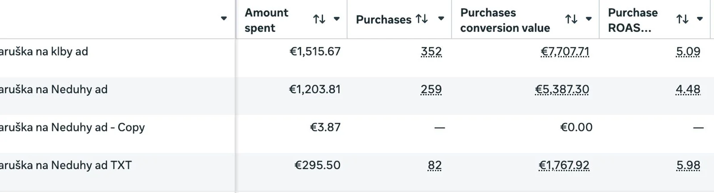
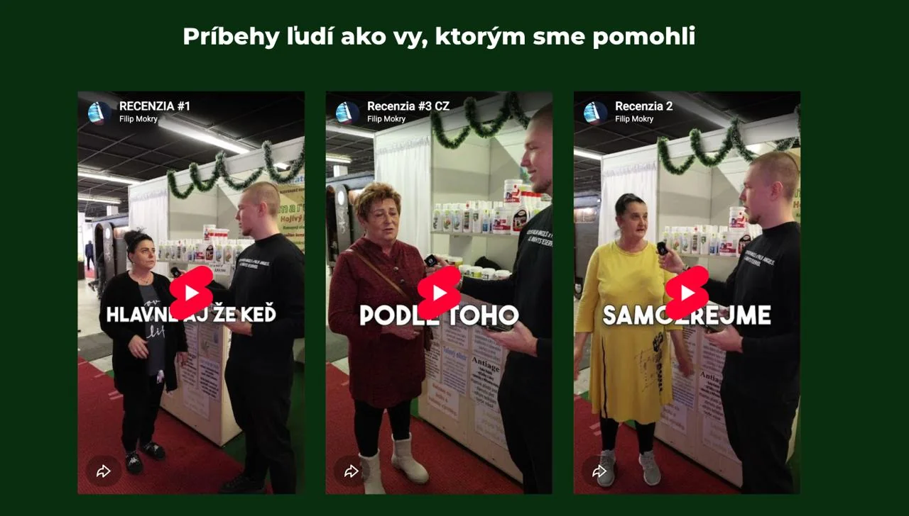

01
NaturBio
15 280 € z jednej kampane s priemerným ROAS 5,18x
O klientovi
Slovenský e-shop so 100 % prírodnými produktmi pre starostlivosť o telo s AOV 25 €.
Výzva
Majiteľ NaturBio František skúšal rôzne typy reklám na Facebooku s rôznymi zľavami a kreatívami, no vždy to skončilo pri vyrovnaní sa s tým, čo dal do reklamy, alebo minimálnym ziskom.
V priemere mal každý mesiac 60 objednávok, no nedarilo sa mu nijak prekonať toto číslo…
Riešenie
2 týždne sme spoznávali jeho cieľovú skupinu.
Ako vnímajú ich problémy a bolesti.
Čo si myslia o takýchto produktoch a v ktorom štádiu musia byť, aby začali riešiť ich bolesti.
Na čo reagujú a v čo veria, že im môže pomôcť.
Aké emócie prežívajú pri ich každodennom živote.
Podľa prieskumu z prvého piliera som napísal všetky reklamy tak, aby sme im pripomenuli ich bolesť, ukázali, že nie sú sami, a že existuje riešenie, ktoré im dokáže utlmiť tento problém.
Vytvorili sme 6 reklám na 3 produkty s rozpočtom 3 204,85 €, ktoré priniesli…
Výsledky
15 280,93 €
Obrat
712
Objednávok
5,18
Priemerný ROAS

Krok za krokom k výsledku.
02
Profesionálna produkcia a postprodukcia
03
Testovanie reklám

Chcete
dominovať?
Ak áno, kliknite na tlačidlo nižšie a uvidíme, či sa kvalifikujete…
Chcem to isté →